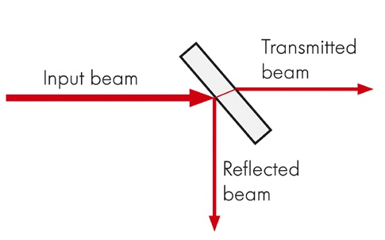

论文阅读 - Event-based Camera 标定工作整理大全
本篇内容整理有：
- 有关 Event Camera Calibration 一些直接相关的工作和工具包
- 目前为止的主流的 Event-Camera 的数据集，整理了其中涉及多传感器外参标定的工作
- 在 Event Camera 的 VO/SLAM、目标检测的工作中，涉及到的多传感器、与传统 CMOS 相机标定的工作（未完，仍在继续整理）
- 目前为止的一些基于 Event 的 Video Synthesis 相关主流工作，去模糊、提高帧率等
主要总结如下：
-
大多数同时采集 / 使用图像帧与 event 数据的，大多数都是直接利用 DAVIS 做的
-
关于 event-camera 与传统相机做外参标定的文章，目前发现了三篇（两种做法，有两篇的做法是一样的）
-
目前做 Video Synthesis 的已有工作中，多数还是基于 DAVIS 的灰度帧，关于彩色视频有：
- 从彩色的、前景高速运动、背景静止的视频中恢复模糊帧。它的 dvs 和 rgb 相机是上面提到的利用分束器做的结合 2
- 基于学习的方法直接根据起始帧、固定周期出现的中间彩色帧和过程中的 event，直接恢复。它的对应彩色帧的 event 数据是模仿 event 的产生方式仿真生成的
Event Camera 外参标定相关整理
有关 Event Camera Calibration 直接相关的工作
event-based_vision_resources 项目中直接提到的与 DVS 标定相关的一些工作如下。然而这里面目前还没有提到 RGB 相机与 DVS 的基于 event 的外参标定工作。这里提出的工作有 DVS 的内参标定、DVS 和 IMU 的外参标定、DVS 与激光雷达的外参标定、双目 dvs 基于 event 的标定、以及 DAVIS 基于灰度帧的与传统相机的外参标定工作。
-
For the DAVIS: use the grayscale frames to calibrate the optics of both frames and events.
- ROS camera calibrator (monocular or stereo)
- kalibr software by ASL - ETH.
这些就是利用 DAVIS 的灰度帧与传统相机进行标定，之前的双目标定的常用工具均可以用。
-
For the DAVIS camera and IMU calibration: kalibr software by ASL - ETH, using the grayscale frames.
与 IMU 的外参标定，还是用的 DAVIS 的灰度帧。
-
For the DVS (events-only):
-
Calibration using blinking LEDs or computer screens by RPG - UZH.
用会闪烁的屏幕或者 LED 灯来进行 dvs 内参和 stereo dvs 外参的标定，基于 events。
-
DVS camera calibration by G. Orchard.
-
DVS camera calibration by VLOGroup at TU Graz.
这两个都是标定内参的。通过在屏幕上生成特定的图案。基于 MATLAB 的 Caltech Camera Calibration Toolbox。
-
-
Song, R., Jiang, Z., Li, Y., Shan, Y., Huang, K.,
Calibration of Event-based Camera and 3D LiDAR,
WRC Symposium on Advanced Robotics and Automation (WRC SARA), 2018.标定 Event Camera 和 VLP-16 激光雷达之间的外参
做了一个标定装置（后面带了一个闪烁的屏幕），Event camera 可以稳定的输出，雷达的 3D 点云也能扫出来明显的效果。作者用的设备是 VLP-16 和 Celex04-S。


标定方法也就是传统的模型：

但是看了下公式发现它只标定了外参的 而没标定 …


-
Dominguez-Morales, M. J., Jimenez-Fernandez, A., Jimenez-Moreno, G., Conde, C., Cabello, E., Linares-Barranco, A.,
Bio-Inspired Stereo Vision Calibration for Dynamic Vision Sensors,
IEEE Access, vol. 7, pp. 138415-138425, 2019.这一篇提到了关于双目的 dvs 之间基于 event 的外参标定工作。做了一个挺麻烦的装置… 他这应该是为了做一个固定的系统。也是通过 LED 灯、基于 events 进行的两者之间的外参标定

Event Camera 相关的数据集中关于多设备和外参标定做法
MVSEC Dataset
Zhu, A. Z., Thakur, D., Ozaslan, T., Pfrommer, B., Kumar, V., & Daniilidis, K. (2018). The Multivehicle Stereo Event Camera Dataset: An Event Camera Dataset for 3D Perception. IEEE Robotics and Automation Letters, 3 (3), 2032–2039. doi:10.1109/lra.2018.2800793
该数据集中多传感器的配置如下：

对于这些传感器配置的参数的确定：
相机的内参、双目的外参和相机 - IMU 的外参通过 Kalibr 工具进行标定。左 DAVIS 和 VLP16 的标定通过 Camera and Range Calibration Toolbox 工具进行标定，用的是 DAVIS 的灰度帧，并且作者根据实际情况和 CAD 模型对其进行了手动微调。


Combined Dynamic Vision / RGB-D Dataset
David Weikersdorfer, David B. Adrian, Daniel Cremers, Jörg Conradt: Event-based 3D SLAM with a depth-augmented dynamic vision sensor. International Conference on Robotics and Automation, Hong-Kong, 2014
这一篇的原文章是拿 RGB-D Camera 和 Event Camera 做 3D SLAM 的。顺便提出了这个数据集。
作者的硬件配置长这个样子：

这一篇做的标定的工作感觉和咱们想要做的有点接近。已经做了通过 RGB frame 与 dvs 的对应 pixel，从而将深度相机捕获的深度图中的每一个深度值与每一个 event 做 pixel 级的对齐
要解决这个问题，作者分了两步。首先先利用一个标定板，找出 RGBD 相机的彩图和 DVS 对应的 pixel。然后利用这些匹配好的 pixel 对，用针孔相机模型建模（利用 Depth 的投影），最后将求解两个相机的内参和两者之间的外参建模成一个最小二乘问题进行求解。
找出 RGBD 相机和 DVS 对应 pixel 的标定板：

问题求解的建模过程：
畸变矩阵这里被建模成了这个简单的模型。作者提到这个简单模型对于 dvs 的建模已经够用了。RGBD 相机在硬件上的补偿已经挺好，也够用了。
depth 像素到 event 像素平面的模型：
然后根据像素间的对应关系，建模最小二乘问题：
求解出 即可。RGBD 相机的内参可以另标定得到。
ViViD : Vision for Visibility Dataset

他这个用的也是 DAVIS，用的灰度帧进行的外参标定。


The UZH-FPV Drone Racing Dataset
直接用的是 DAVIS，frame 和 event 之间的标定是做好的。其他的直接用 DAVIS 的 frame 和 event 的还有很多数据集，如 direct_event_camera_tracking dataset 等。
A Dataset for Visual Navigation with Neuromorphic Methods
Barranco, F., Fermuller, C., Aloimonos, Y., & Delbruck, T. (2016). A Dataset for Visual Navigation with Neuromorphic Methods. Frontiers in Neuroscience, 10. doi:10.3389/fnins.2016.00049
这也是一个结合 RGB-D（MS Kinect）和 DAVIS 数据的数据集。它的一个主要的工作是要将 rgbd 的 depth 图与 DAVIS 的灰度帧给对应起来（和 上面那个 RGBD 的工作 有点像）。分为两步，首先获取到两个传感器的内外参的参数，然后通过转换 rgbd 生成的点云的坐标系并在 DAVIS 的成像屏幕进行投影，得到它对应的深度图。
关于 DAVIS 和 RGBD 的外参标定，作者论文中并没有明确提及… 看描述应该是拿 RGBD 的 RGB 和 DAVIS 的灰度帧做的传统的外参标定。关于得到 DAVIS 坐标系下的深度图，作者将 RGBD 的点云通过两者的外参转换到 DAVIS 的坐标系下，然后再做个投影即可。


Color-DAVIS346 Datasets
C. Scheerlinck*, H. Rebecq*, T. Stoffregen, N. Barnes, R. Mahony, D. Scaramuzza, CED: Color Event Camera Dataset, IEEE Conference on Computer Vision and Pattern Recognition Workshops (CVPRW), 2019.
这是一个带有彩色 fame 的 Event 数据集，但它直接拿 DAVIS346 相机录制的… 它可以直接输出彩色图像与 event。


到此数据集方面整理的也差不多了，其他的 Event 数据集获取图像也基本都是通过 DAVIS 直接读取的，而不牵扯多传感器和外参。
DDD17
Binas, J., Neil, D., Liu, S.-C., and Delbruck, T. (2017). DDD17: End-To-End DAVIS Driving Dataset. arXiv:1711.01458 [cs]. Available at: http://arxiv.org/abs/1711.01458. (available online)
一个包含了 DAVIS 的灰度帧和 event 数据、和车辆的一些运动信息比如速度等，场景大多为街区场景，为构建端到端的无人驾驶数据集做准备。
Large-scale multimodal event-based dataset
Leung, S., Shamwell, J., Maxey, C., Nothwang, W. D.,
Toward a large-scale multimodal event-based dataset for neuromorphic deep learning applications,
Proc. SPIE 10639, Micro- and Nanotechnology Sensors, Systems, and Applications X, 106391T. PDF
这一篇论文下载不下来… 看不了，sci-hub 里也没有。但看摘要，它是通过两个 DAVIS240C 和一个深度相机录制的。里面可能会有关于几者之间外参标定。
Event Camera 一些应用中标定相关的工作
Object Tracking
D. Saner, O. Wang, S. Heinzle, Y. Pritch, A. Smolic, A. Sorkine-Hornung, M. Gross,
High-Speed Object Tracking Using an Asynchronous Temporal Contrast Sensor,
Vision, Modeling and Visualization (Darmstadt, Germany, October 8-10, 2014), pp. 87-94. PDF
这是一篇做 Object Tracking 的工作。它利用 event 数据在彩色帧中跟踪快速运动的物体，所以需要将彩色图与 event 进行 Image registration。它利用了一个分束器装置使得在在两个相机中看到的场景尽可能保持一致 （分束器应该是这个作用吧？那不然他后面算单应矩阵问题就会很大），然后通过一个标定板然后来求单应矩阵，将 DVS 坐标系映射到相机坐标系中去了。


分束器（beamsplitter）：
图片来自 知乎
为了将单应性对应的更准确，作者手动尽可能的将两个相机的光轴对齐。与传统相机相比，DVS 的分辨率较低，DVS 像素将始终映射到视频图像中直径为几个像素的区域。因此，作者发现单应性映射对于作者的目的而言足够精确。

Localization and Ego-Motion Estimation
Mueggler, E., Huber, B., Scaramuzza, D.,
Event-based, 6-DOF Pose Tracking for High-Speed Maneuvers,
IEEE/RSJ Int. Conf. Intelligent Robots and Systems (IROS), Chicago, IL, 2014, pp. 2761-2768. PDF, YouTube
涉及到 DVS 内参的标定


VO/SLAM (VIO/VI-SLAM)
Censi, A. and Scaramuzza, D.,
Low-latency Event-based Visual Odometry,
IEEE Int. Conf. Robotics and Automation (ICRA), 2014, pp. 703-710. PDF, Slides
这一篇是同时通过一个灰度的 camera 和 DVS 来同时做的 VO。需要 camera 提供的绝对光强，所以需要将 camera 和 DVS 进行 Pixel 级别的对应。

该标定算法涉及时间同步和 pixel (空间) 的对齐。主要思路都是放置一段时间，然后利用两者捕获的光强变化作对比从而进行时间与空间的标定。
-
时间标定：
要将 dvs 与 camera 的数据流的时间戳对齐，首先先将两者放置使其可以看到差不多的场景（see the same “changes”）。然后定义出一个可以表征两者观察到 change 而触发的信号，累积一段时间后将两者进行对比，从而判断出时移。由于累计的时间足够长，所以即使两者看到的场景并不完全一致，结果仍比较鲁棒。
由于这两个数据流的频率不一致，因此需要将它们重新采样为相同的采样率 。
定义 dvs 的信号 为在时间间隔 内检测到的 event 数量：

定义表征 camera 图像光强变化的信号 ：
来自 camera 的数据可以被看做一个二元组 ， 是时间戳， 代表整张图像（ is the image
, here defined as a function on the visual sphere）。计算其离散的导数 ，从而得出总的光强变化 ， 是 的一范数 。从而定义表征 camera 图像在时间间隔 的光强变化的信号 ：
然后分析一段时间的两者信号，找出时移 :

同样，这种方法可以推广到只要能找到相互关系的、需要时间同步的两个系统中。

-
pixel 对齐（空间标定）的主要流程是：
-
将两个相机组成的装置放在环境中静止，环境中会出现动态物体
-
统计一段时间内，dvs 的每个 pixel 的触发的 event 的数量，以及每个 camera pixel 的累计光强变化
用下标 a ∈ A 来表示每个 DVS pixel, 用下标 b ∈ B 表示每个 camera pixel。与上面时间标定类似 ( 表示整张图像的触发 event 数量)，定义 表示每个 dvs 像素在时间间隔 的触发 event 数量。 同理，表示某个 camera 像素的。
-
将每一个 dvs pixel 分别与每一个 camera pixel 根据在一段时间内的触发的情况，进行相似性度量
定义 表示 和 的相关性：

对每个 dvs pixel，将其与每个 camera pixel 遍历与对比。所以数据量的量级是 (, 是两个相机的分辨率)。这是一个很恐怖的量级，甚至可能都不能完整加载到内存中… 所以作者在实验的时候对 dvs 的分辨率进行了下采样，从 128×128 降到了 16*16…
-
选出每一个 dvs pixel 与其相似度最高的相机 pixel，并通过计算置信度去除外点。
对于每个 a（dvs 中的 pixel），对应于 camera frame 中的 pixel b：
如果触发的 event 在 camera 的视野外，则按道理是无法在 camera 中对应上的。所以为了解决这个情况，又定义了一个简单的置信度计算公式：
卡一个阈值即可区分是否真的有对应关系，从而去除在 camera 中观测不到的点。
至此得到 dvs 和 camera 的初步的对应关系。
-
根据几何约束（正方形网格），对 dvs pixel 在相机像素平面上的排列情况进行再调整
由于是每个 dvs pixel 都是单独进行对应的，所以受到噪声对结果的影响还蛮大的。所以再对两者 pixel 的对应关系进行微调，加入 dvs 的 pixel 是网格几何分布的约束。下图是微调后的效果：

定义了一个能量函数：
其中 是上一步中找到的对应关系； 是指 dvs pixel 尽可能的符合正方形网格模型。 是对模型的置信度。
设 为优化后的、dvs pixel 应该对应的 camera pixel 的位置。
：设 为上一步估算出的 dvs pixel 的对应 camera pixel 的位置。 为上一步计算出的置信度。
：dvs pixel 的分布应该为正方形栅格的形状。为了表达这一约束可以有很多种形式来表述。作者用了一个 dvs pixel 与其前邻居 dvs pixel 的距离应该是相等的这一约束。
，有
得出
将 E 最小化即可。使用 quasi-Newton BFGS 算法来优化它。
作者实验中选择的是 = 0.1，25 次迭代。
-
对 dvs 降采样后的 pixel 进行插值，得到全部的 dvs pixel 对应到 camera frame 中

-
讨论：
它提出的这个算法的缺陷：
-
不能适用于高分辨率 Event Camera 的场景下。128×128 分辨率的 DVS 都需要进行下采样到 16×16，对齐结束后然后再进行插值恢复，这可能会丧失不少信息。
如果把这个标定问题的思路放到三维求解、比如小规模 SfM、解出 Rt、进行重投影的方式的话，应该不受分辨率的限制。可能会得到更高的标定精度。
-
需要将整个装置放置很长一段的时间来收集数据，效率较低，且算法的时空复杂度都较高。作者在论文中提到标定过程中收集数据用了 35 分钟。
如果能像现在标定两个普通相机外参那样的效率来标定出 Event Camera 和 RGB Camera 之间的外参，感觉会更好。
-
虽然这个算法可以自标定，也就是标定过程是全自动的，但是对场景也有一定的限制：

Rosinol Vidal, A., Rebecq, H., Horstschaefer, T., Scaramuzza, D.,
Ultimate SLAM? Combining Events, Images, and IMU for Robust Visual SLAM in HDR and High Speed Scenarios,
IEEE Robotics and Automation Letters (RA-L), 3 (2):994-1001, Apr. 2018. PDF, YouTube, Poster, Project page, ICRA18 video pitch.
这一篇是结合 Event Frame、Standard Frame 和 IMU 三者联合做的 SLAM。

作者做实验直接用了 DAVIS，所以也无需考虑灰度帧与 dvs 的外参标定。


Kueng, B., Mueggler, E., Gallego, G., Scaramuzza, D.,
Low-Latency Visual Odometry using Event-based Feature Tracks,
IEEE/RSJ Int. Conf. Intelligent Robots and Systems (IROS), 2016, pp. 16-23. PDF. YouTube
作者做实验直接用了 DAVIS，所以也无需考虑灰度帧与 dvs 的外参标定。


Video Synthesis 的一些目前相关工作工作
以下仅从实验设置方面整理
Event Camera 的标定中有很多工作是与传统 Camera 相结合的。那么直接从单 Event Camera 中恢复出 frame 信息也是一个重要的工作领域。
Brandli, C., Muller, L., Delbruck, T.,
Real-time, high-speed video decompression using a frame- and event-based DAVIS sensor,
IEEE Int. Symp. on Circuits and Systems (ISCAS), 2014, pp. 686-689.
这一篇是第一篇从 event 流中恢复视频帧的工作。直接利用 DAVIS 获取灰度帧和 event 数据，重建出灰度视频序列。


算法主要步骤（待深究）：


Liu HC., Zhang FL., Marshall D., Shi L., Hu SM.,
High-speed Video Generation with an Event Camera,
The Visual Computer, 2017. PDF.
这一篇是从”前景高速运动、背景静止 (应用场景限制)” 的彩色视频序列中恢复超高帧率的视频。同时采集彩色视频与 event 流的装置与 上面的做目标识别的一篇文章 相同，都是采用一个光学分束器。


Shedligeri, P.A., Shah, K., Kumar, D., Mitra, K.,
Photorealistic Image Reconstruction from Hybrid Intensity and Event based Sensor,
arXiv:1805.06140, 2018.
仅仅使用 DAVIS 的灰度帧和 event 进行的图像重建。考虑了 event camera 的突然运动和噪声的情况，效果更鲁棒。


Wang, Z., Jiang, W., Katsaggelos, A., Cossairt, O.,
Event-driven Video Frame Synthesis,
arXiv:1902.09680, 2019.
基于学习的方法来做的。实验是直接选择的 DAVIS 数据集。


Pan, L., Scheerlinck, C., Yu, X., Hartley, R., Liu, M., Dai, Y.,
Bringing a Blurry Frame Alive at High Frame-Rate with an Event Camera,
IEEE Conf. Computer Vision and Pattern Recognition (CVPR), 2019. PDF. Slides, Video CVPR, Video CVPRW, Code
实验设置：利用的是 DAVIS 的灰度帧和 event，灰度帧的去模糊。

EDI 在今年还有其扩展版本 mEDI，arXiv:1903.06531v2。

Pini, S., Borghi, G., Vezzani, R., Cucchiara, R.,
Video synthesis from Intensity and Event Frames,
Int. Conf. Image Analysis and Processing (ICIAP), 2019. Lecture Notes in Computer Science, vol 11751. PDF
这是一篇基于学习的方法来做的。使用 DDD17 数据集，基于 灰度帧和积分后的 event frame。做的是通过初始帧和后续的 event 数据流来估计接下来的帧。

Pini S., Borghi G., Vezzani R.,
Learn to See by Events: Color Frame Synthesis from Event and RGB Cameras,
Int. Joint Conf. on Computer Vision, Imaging and Computer Graphics Theory and Applications (VISAPP) 2020. PDF
这也是一篇基于学习的方法来做的。这一篇通过 event 恢复彩色的视频流。通过初始帧和一定周期内出现的彩色帧，以及过程中的 event，恢复出彩色帧。
作者提出的模型可以同时恢复彩色帧和灰度帧。作者通过一些通用数据集比如 KITTI，根据 event 的产生方式，通过彩色图，生成仿真的 event 数据流来进行对模型的训练；此外还用的两个 Event Camera 的数据集，都是采集的 DAVIS 的灰度帧。


@author 薛轲翰
@e-mail kehan.xue@gmail.com
本博客所有文章除特别声明外，均采用 CC BY-SA 4.0 协议 ，转载请注明出处！联系作者。